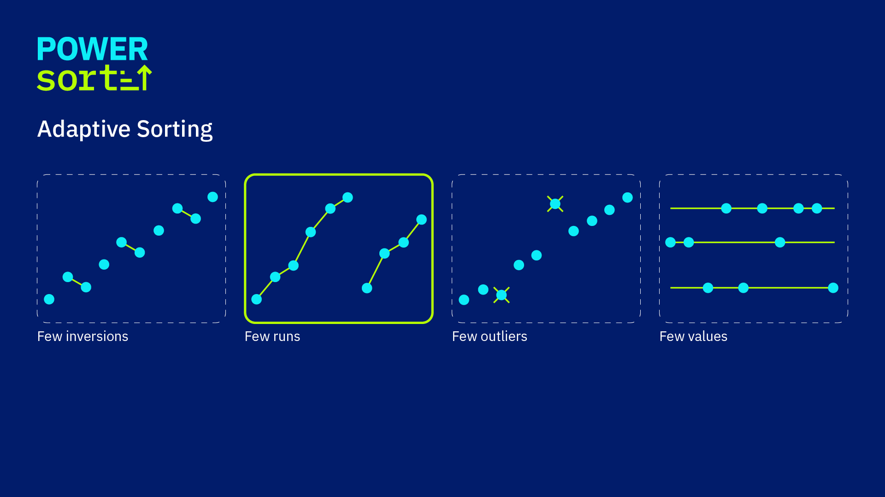
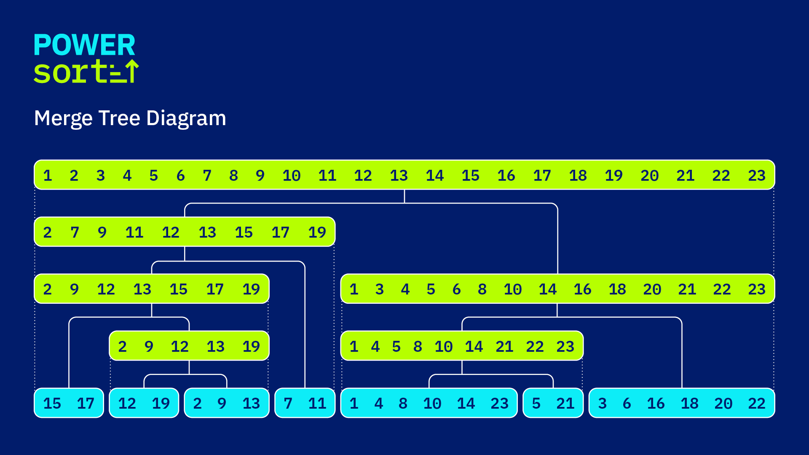
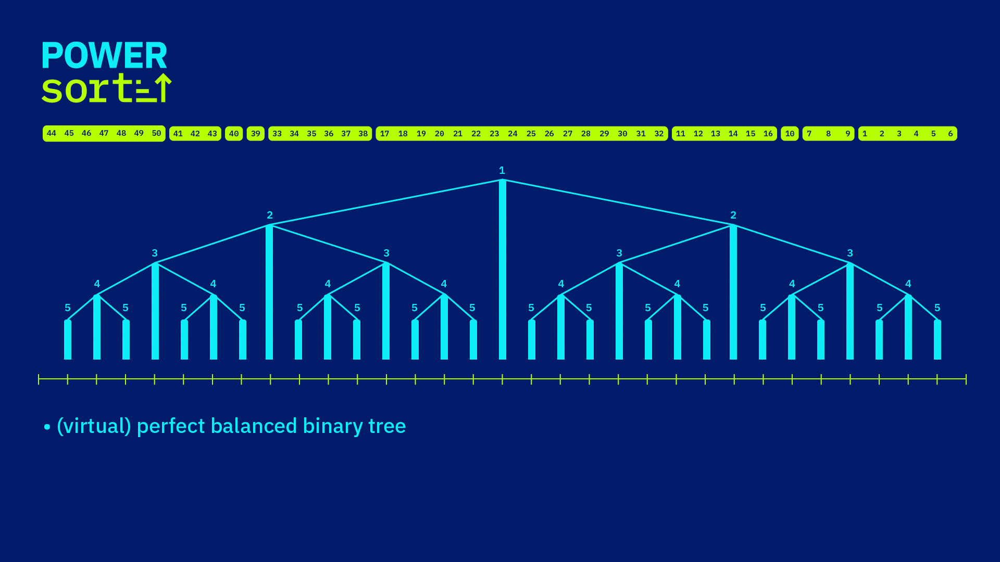

What is Powersort?
Powersort is a run-based merge-sort algorithm that is provably nearly optimal in the number of element comparisons it performs. It was designed by J. Ian Munro and Sebastian Wild and presented at SODA 2018. In Python 3.11 it replaced the merge-strategy used by Timsort, making it the default sort for all Python lists.
Nearly Optimal
Performs at most n log₂ n + O(n) comparisons on any input — matching information-theoretic lower bounds within a small additive term.
Adaptive to Existing Order
Exploits natural ascending and descending runs already present in the data, requiring far fewer comparisons on partially-sorted inputs.
Optimal Merge Tree
Uses a mathematically grounded node power heuristic to build a merge tree that is provably within a factor of 2 of optimal.
Python 3.11 Default
Adopted in CPython 3.11 as a drop-in improvement over Timsort's original merge strategy, with zero API changes for users.


How the Algorithm Works
Like Timsort, Powersort scans the input for natural runs — maximal ascending (or reversed-descending) sequences. The innovation is in how those runs are merged: instead of Timsort's stack-based heuristic, Powersort uses a carefully computed node power to schedule merges in a near-optimal order.
Detect Natural Runs
Scan left-to-right. A run is a maximal non-decreasing subsequence
(descending runs are reversed in-place). If a run is shorter than
MIN_RUN (≈ 32–64 elements) it is extended using binary insertion sort.
Compute Node Power
For two adjacent runs A and B in an array of total length n, the node power is computed from their start positions and lengths. Intuitively, it represents the level in a balanced binary tree at which the interval spanned by A ∪ B would first appear.
Maintain a Run Stack
Runs are pushed onto a stack. Before pushing a new run, any pending runs on the stack whose node power is greater than or equal to the new run's power are merged first. This guarantees the merge tree is nearly optimal.
Flush Remaining Runs
After the entire input has been scanned, all remaining runs on the stack are merged right-to-left, completing the sort.

Given an array of length n, two adjacent runs starting at position
i and j = i + |A| (where |A| is the length
of run A), the node power k is the number of leading identical bits in
the binary representations of the fractions
(i − 1) / n and (j + |B| − 1) / n
before the bit representing the boundary between them.
Equivalently, using integer arithmetic:
# integer bit-trick (no floating-point required)
def node_power(left, left_len, right_len, n):
"""
left : start index of the left run
left_len : length of the left run
right_len : length of the right run
n : total array length
"""
a = 2 * left + left_len # = 2 * midpoint numerator (left side)
b = 2 * left + left_len + right_len # right side
power = 0
while a // n == b // n:
power += 1
a = 2 * a - n * (a // n)
b = 2 * b - n * (b // n)
return powerA higher node power means the two runs should be merged later (at a higher level of the merge tree). The stack invariant ensures that merges always happen in the right order.
Comparison with Timsort
| Property | Timsort | Powersort |
|---|---|---|
| Merge strategy | Stack-based heuristic (3 invariants) | Node-power optimal tree |
| Optimality guarantee | None (can be sub-optimal) | Provably ≤ 2× optimal merge cost |
| Worst-case comparisons | n log₂ n + O(n) | n log₂ n + O(n) |
| Adaptive to runs | Yes | Yes (near-optimal) |
| Algorithm complexity | Complex stack invariants, hard to prove correct | Simple, clean invariant |
| Stable sort | Yes | Yes |
| Extra memory | O(n) | O(n) |
Powersort in Python 3.11
Python's built-in list.sort() and sorted() have used Timsort
since Python 2.3. With Python 3.11 (released October 2022),
the CPython team adopted Powersort's merge strategy, making every Python program that
sorts data an implicit beneficiary of this research.
What changed?
- The merge-decision logic inside Timsort's run-stacking loop was replaced with the node-power computation — a single integer loop needing no floating-point arithmetic.
- Timsort's complex merge invariants (the "galloping" mode and stack-balance checks) were simplified while retaining all existing optimisations such as galloping merges and binary insertion sort for short runs.
- Performance is equivalent or faster across all benchmarks, with measurable wins on adversarial sequences that Timsort handled sub-optimally.
- Full backwards compatibility: the sort is still stable, in-place (logically), and respects custom key functions and comparison operators.
Try it yourself
# Python 3.11+ uses Powersort under the hood automatically
import sys
print(sys.version) # 3.11.x ...
data = [5, 3, 1, 4, 1, 5, 9, 2, 6]
data.sort() # Powersort at work!
print(data) # [1, 1, 2, 3, 4, 5, 5, 6, 9]Implementations & Code
Reference implementations of Powersort are available in several languages, alongside the production-quality CPython implementation. All links below are to open-source code.
Reference Python implementation
Pure-Python prototype of Powersort by Sebastian Wild, including the node-power computation and full merge logic. Useful for experimenting and understanding the algorithm without the CPython C layer.
CPython 3.11+ (Objects/listobject.c)
The production C implementation powering list.sort() in every
Python 3.11+ installation. Look for powerloop in the source.
Java implementation
A Java implementation suitable for benchmarking against Java's standard
Arrays.sort, also developed by Sebastian Wild as part of the
research artefacts for the SODA 2018 paper.
C implementation
Low-level C implementation suitable for direct comparison with the CPython code. Includes instrumented variants that count comparisons and merges.
Minimal Python sketch
"""
Minimal Powersort sketch (illustrative, not production-ready).
For the full reference implementation see wild-inter.net/publications/munro-wild-2018
"""
def node_power(left, left_len, right_len, n):
"""Return the node power of two adjacent runs."""
a = 2 * left + left_len
b = a + right_len
power = 0
while a // n == b // n:
power += 1; a = 2 * a - n * (a // n); b = 2 * b - n * (b // n)
return power
def powersort(arr):
n = len(arr)
if n < 2:
return arr
stack = [] # [(start, length, power), ...]
i = 0
while i < n:
run_start, run_len = i, _extend_run(arr, i, n)
i += run_len
power = node_power(run_start, run_len, n - i if i == n else _next_run_len(arr, i, n), n)
# merge pending runs with higher or equal power
while stack and stack[-1][2] >= power:
s, l, _ = stack.pop()
arr[s:s + l + run_len] = _merge(arr[s:s + l], arr[run_start:run_start + run_len])
run_start, run_len = s, l + run_len
stack.append((run_start, run_len, power))
# flush remaining runs
while len(stack) > 1:
(s1, l1, _), (s2, l2, _) = stack[-2], stack[-1]
arr[s1:s1 + l1 + l2] = _merge(arr[s1:s1 + l1], arr[s2:s2 + l2])
stack[-2] = (s1, l1 + l2, 0)
stack.pop()
return arrPublications & Further Reading
The Powersort algorithm and its theoretical analysis are described in the following work. All supporting code, slides, and extended versions are available via Sebastian Wild's publications page.